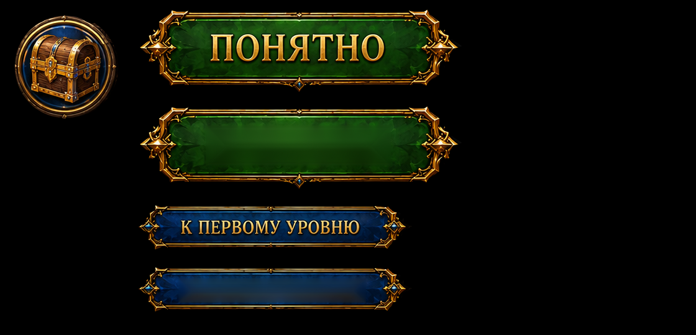

Asset inspection, not Unity captures. The original circular gift and complete button silhouettes are isolated from their surrounding scenery. Original Russian lettering retained; English faces repaired.
